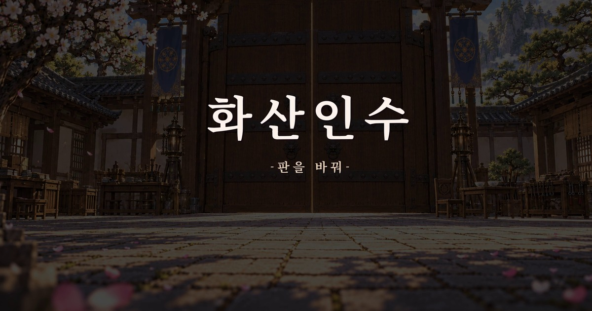

이미지 시네마
이미지 시네마는 결정적 이미지와 음악 사이의 시간에 관객이 자신의 경험과 감정을 더할 여백을 남기는 형식입니다.
각 인물의 선택과 행동이 다음 장면으로 이어집니다. 문을 여는 이야기는 음악과 이미지 사이에서 함께 여는 내일의 의미를 만듭니다.
미리내맨의 장편 무협소설 화산인수를 바탕으로 만든 메인 테마곡 「판을 바꿔」 v6입니다.
서로 다른 사람들이 각자의 판단과 기술로 함께 문을 여는 이야기를 노래와 이미지로 담았습니다.

창작자 미리내맨 · 메인 테마곡 〈판을 바꿔〉 v6 · 재생 시간 약 3분 17초
이미지 시네마는 결정적 이미지와 음악 사이의 시간에 관객이 자신의 경험과 감정을 더할 여백을 남기는 형식입니다.
각 인물의 선택과 행동이 다음 장면으로 이어집니다. 문을 여는 이야기는 음악과 이미지 사이에서 함께 여는 내일의 의미를 만듭니다.
독립 웹툰 「문 열어라」는 10장의 이미지를 세로로 이어 읽는 주제곡의 테마 각색입니다.
감상 페이지에서 음악과 이미지 시네마를 재생하고, 웹툰은 자신의 속도로 읽을 수 있습니다.
〈판을 바꿔〉는 미리내맨의 장편 무협소설 〈화산인수〉를 바탕으로 만든 주제곡입니다. 원작과 캐릭터의 이야기는 화산인수 원작 페이지에서 이어집니다.